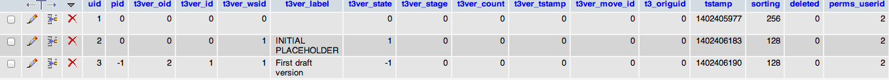
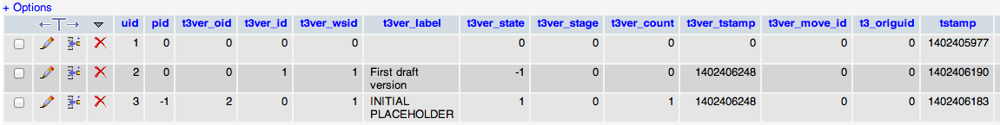

Task #54948
Epic #58282: Workspaces Workpackage #2
Story #58284: Bug fixes & Behaviour
swap workspace won't reset t3ver_wsid
| Status: | New | Start date: | 2014-01-13 | |
|---|---|---|---|---|
| Priority: | Should have | Due date: | ||
| Assigned To: | - | % Done: | 0% |
|
| Category: | Workspaces | Spent time: | - | |
| Target version: | 7.5 | |||
| TYPO3 Version: | 6.2 | Complexity: | ||
| PHP Version: | Sprint Focus: |
Description
This is an followup problem to #37065 and change set a81a5816cf94ed873978d85dad25f6a3b7823b74. This patch introduced an new check to the t3ver_wsid (line 1102). But this field is not always set to the right workspace.
For example if you create new content in the workspace and the choose the mass action "swap", TYPO3 will not set the t3ver_wsid to 0. See attached screenshots for the db status.
The result is: In live version everything looks good, but all the swapped content disappears in the workspace preview.
{kind=link}
{kind=link}
{kind=link}
{kind=link}
Related issues
History
#1 Updated by Oliver Hader over 1 year ago
- Parent task set to #54853
#2 Updated by Oliver Hader over 1 year ago
- Status changed from New to Needs Feedback
Thanks for your report. However, the change you mentioned (frontend preview) does not seem to be related to the problem of not setting/modifying "t3ver_wsid" in the backend.
Besides that, the records in the screenshots you provided do not look like having been processed at all with a swap/publish command in the backend.
I've been working on functional test cases the last few weeks for workspaces - thus, your scenario could be part of those tests as well - especially the edge cases are interesting here.
So, can you please give some more information what you did and maybe which warning/errors have been shown (see Admin Log in the backend as well).
Does the problem occur only in TYPO3 4.5 or can you reproduce that in the current master (TYPO3 6.2 LTS development) as well?
Thanks in advance for your feedback!
#3 Updated by Oliver Hader over 1 year ago
Short reminder on this feedback request. Thanks in advance!
#4 Updated by Michael Voehringer about 1 year ago
- File v6.2.3-before.png added
- File v6.2.3-after-swap.png added
Hi Oliver,
i now tested this issue on an clean (Intropackage) 4.5.34 and on the latest 6.2.3 and still can reproduce this error. I found this issue because we use the "Swap content" of the workspace module a lot and after updating to an T3 Version which includes change set a81a5816cf94ed873978d85dad25f6a3b7823b74 a lot of duplicate Content-Element appeared in the frontend. In the change T3 introduce an an new condition which checks the t3ver_wsid.
Here is what i did:
1.) Install T3
2.) Create workspace
3.) Create new page in the workspace 
4.) Go to the Workspace module and choose "Mass action"->SWAP.
5.) after you swap the versions in the DB the t3ver_wsid is still 1 Please let me know if i can help you with this issue.
#5 Updated by Oliver Hader about 1 year ago
- Parent task changed from #54853 to #58284
#6 Updated by Oliver Hader about 1 year ago
Alright & thanks, I moved the issue to the current workpackage and will have a look soon (with some functional tests for that scenario)
#7 Updated by Oliver Hader about 1 year ago
- TYPO3 Version changed from 4.5 to 6.2
By looking to the SQL data, it looks correct since "swapping" just switches live versions with workspace versions. For the "publish" task (one-way) the t3ver_* fields are cleared...
However, the "swap" action is still missing in the functional test cases, there's currently only "modify", "publish" (single record) and "publishAll" (whole workspace)
#8 Updated by Michael Voehringer 10 months ago
Hi Oliver,
ok, if the SQL data is correct then there must be an bug in the SQL-query. If you can have a look at the changeset form ticket #37065 ( https://forge.typo3.org/projects/typo3cms-core/repository/revisions/a81a5816cf94ed873978d85dad25f6a3b7823b74/diff/typo3/sysext/frontend/Classes/Page/PageRepository.php) on line 878 -880 there where an new condition added which filters out the swapped records when you are in an workspace.
Maybe we should change the title of this bug?
#9 Updated by Alexander Opitz 8 months ago
- Status changed from Needs Feedback to New
#10 Updated by Mathias Schreiber 6 months ago
- Target version set to 7.5